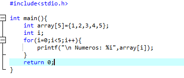

Los vectores son un tipo de array (arreglos). Son, de hecho, un array de una sola dimensión y forman parte de la amplia variedad de estructuras de datos que nos ofrece C++, siendo además una de las principales y más útiles estructuras que podremos tener como herramienta de programación. Los vectores o arrays o arreglos de una dimensión (como los quieras llamar), son utilizados para almacenar múltiples valores en una única variable. En un aspecto más profundo, este tipo de arrays (vectores), permiten almacenar muchos valores en posiciones de memoria continuas, lo cual permite acceder a un valor u otro de manera rápida y sencilla. Estos valores pueden ser números, letras o cualquier tipo de variable que deseemos incluso tipos de datos complejos.
Para obtener todos los datos que se encuentran al interior de un vector, es necesario recorrer el array o vector, para recorrerlo, se usa casi siempre un ciclo for, en algunos casos mas específicos un ciclo while, pero generalmente el ciclo for es el ideal para esto, dado que conocemos el tamaño del array. La lógica de este procedimiento es la siguiente, el ciclo for comenzara desde cero e ira hasta el tamaño del vector, de modo que la variable de control que generalmente llamamos "i", será la que va a ir variando entre cero y el tamaño del array, de esta forma al poner la i al interior de los corchetes, estaremos accediendo al valor de cada casilla del vector y podremos hacer lo que sea necesario con dicho valor, veamos:
